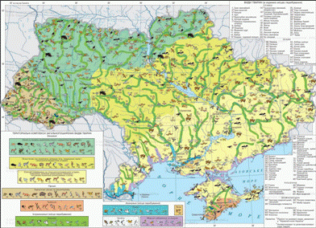

Історія формування.
{kind=link}
Тваринний світ України постійно змінювався впродовж історії розвитку Землі. Під впливом геологічних, кліматичних та інших чинників одні види зникали, інші з’являлися. Значні зміни у фауні України відбулися після льодовикової епохи. На зміну велетенським мамонтам, шерстистим носорогам, печерним ведмедям і левам, північним оленям, плямистим гієнам прийшли більш пристосовані до нових умов бики-тури, зубри, дикі коні-тарпани, дикі осли-кулани, сайгаки, сарни, росомахи, летючі білки та багато видів, які збереглися до наших днів. Подальші зміни природного середовища поступово наближали склад фауни до сучасного.
З розвитком людини зростав і її вплив на формування тваринного світу. Полювання, поширення скотарства і землеробства, вирубування лісів, розорювання степів спричинили знищення одних видів тварин, відступ інших на схід – у степи Передкавказзя та Прикаспію. Так, у ХVІ ст. з наших земель зникли кулани, у ХVІІ ст. – тури і зубри, у ХІХ ст. – росомахи і летючі білки, що водилися на Поліссі, тарпани й сайгаки, що жили в лісостепу і степу.
Нині тваринний світ України налічує понад 45 тис. видів. Серед них більш як 100 видів ссавців, понад 300 видів птахів, 20 видів плазунів, 17 видів земноводних, 240 видів риб і більш як 26 тис. видів безхребетних.